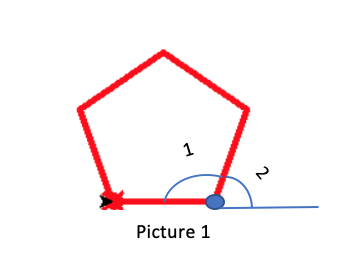
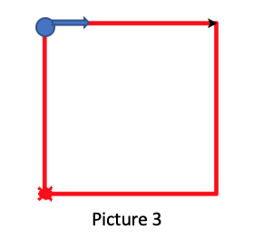

4. Now is the for loop
In this level, you will learn how to write a for loop. There are 2 parts in this level:
- Getting familiar to “for loop” by writing a program to draw a pentagon
- Advanced practice with “for loop” by using for loop and write another program to draw a house.
Before reading thhe introduction, let's look at the lecture
Reminder: Through the first level of the turtle program, children should have acknowledged the turtle’s default direction and some common commands. Here are those commands:
| Purpose | Command |
|---|---|
| Import Python turtle graphic. | import turtle |
| Create a name for your turtle. | name = turtle.Turtle() |
| Choosing a shape.
if you skip the command choosing a shape for your turtle then your turtle shape will automatically be an arrow. |
name.shape(‘shape’)
You have to replace ‘shape’ by one of these shapes: arrow, circle, square, triangle or turtle. |
| Choosing a color
if you skip the command choosing a color for your turtle then your turtle color will automatically be black. |
name.color(‘color’)
You have to replace ‘color’ by the color that you wish to. |
| Setting a default location to (0,0) | name.goto(0,0) |
| Setting a
background
If you don’t want to have background image for your turtle, please skip this part. |
|
| Call the screen function. | screen=turtle.Screen(). |
| Set background to the picture that you like. | screen.bgpic(“picture_file”)
Click to the image icon and look at 3 images that it contains. Replace ‘picture_file’ with the image file that you like. |
| Movement commands | |
| Make the turtle goes forward in the current direction. | turtle.forward(steps) |
| Turns the turtle to the left direction in number degrees. | turtle.left(degrees) |
| Turns the turtle to the right direction in number degrees. | turtle.right(degrees) |
| Pointing a variable to an object. | variable = object
The object can be in any type: integer, decimal, list, etc. |
Let’s get started with drawing the square from level 1:
Look back the code of the previous chapter, in order to draw the simplest square your code should be:
| Code | Interpret |
|---|---|
| name.forward(length)
name.left(90) name.forward(length) name.left(90) name.forward(length) name.left(90) name.forward(length) name.left(90) |
You can notice that we repeat the 2 lines of code
name.forward(length) name.left(90) for 4 times. Therefore, in order to shorten our code, we can use a for loop to repeat our code. |
So how does for loop work?
For loops are traditionally used when you have a block of code which you want to repeat a fixed number of times. The Python for statement iterates over the members of a sequence in order, executing the block each time.
The general command of a for loop:
|
for
|
Explanation for for loop:
- for var in range(n): this line of code is used to command that everything that is indented and lie under it will be replicated for n times.
- var:This is an iterator. This can be replaced by any letters or words.
- n: number of times that the chunk of code should be replicated. This must be an integer.
- For example: var can be replaced by a letter: a or
b or c, etc, or by a word such as time, or character , etc.
Notice: varvar only takes value from 0 to n-1.
For example: changing the general “for loop” above into a real “for loop” that draws a square will be:
- If you choose your var is i, then you need to replace var to i.
- There are 4 equal edges in a square.
- There are 4 angles in a square, each angle is 90 degrees. If you decide to draw the square from the left, then you will turn your turtle to the left for 90 degrees.
- From (b) and (c) you will know that you have to repeat the code that draws the edge and the angle of the square for 4 times in order to create a square.
- Then here is the “for loop” for drawing the square.
|
for
|
Notice:Indentation is very important in a for loop of a Python program. It helps indicate which chunk or line of code must be replicated and which line or chunk of code should not be. Without precise indentation, code script will not work.
Let’s get some for loop practice
Part 1: Draw a pentagon by using for loop.
 Notice:- You will always have a turtle locates at the default direction since you have set it at position (0,0).
- The black arrow is the default location and direction of your turtle. The red turtle is the final direction and location of your turtle. /li>
Instruction
- Step1: Firstly, you need to set up your turtle just like what you did in the setting up part for the first chapter. Including:
- Set up your turtle name.
- Choose a shape for your turtle.
- Set up turtle defaul location to (0,0).
- Set up turtle color to the color that you like.
- Set up background if you wish to.
- Pick a lengh for all the egdes of your pentagon by using the command: variable = object.
- Step 2: Write out your for loop:
- As you can see in the given example of drawing a square, the first line in the for loop is ‘for i in range(4):’.’range(4)’ is because there are 4 egdes and 4-90 degrees angles in a square.
- For the pentagon, you must notice that there are 5 egdes in the pentagon.
- Each egde create with the co-egde an angle of 108 degrees and there are also 5 edges in a pentagon. Threfore, you will have to repeate the code to draw the egde and the angle for 5 times.
- Step 3: Draw the edge: This command will be indented 1 tab (or 4 spaces) since it lies in the for loop just like the ‘name.forward(length)’ in the provided sample.
- As you have noticed about the default position, the black arrow, in order to draw a pentagon looks like picture 1, first just write a command that makes the turtle go forward by number of steps you have set up in step 1.
- You can use either way that have been mentioned in chapter 2 to make the turtle go forward by number of steps.
- Step 4: Create the angle: This command will be indented 1 tab (or 4 spaces) since it lies in the for loop just like the ‘name.turn(90)’ in the provided sample.
- More specific, in the angle part, you must be carefull.
- The black arrow is your original position, after drawing the horizontal egde, you are now at the blue dot and the turtle is facing to the right. Therefore, in order to make the first 108 degrees angle, which is the angle 1, you must turn your turtle to the left for a number of degrees which is angle 2.
- Each angle of a pentagon is 108o, which is angle 1.
- angle 1 + angle 2 = 180 degrees ==> angle 2 = 180 – 108 = 72.
- For example: if you want your pentagon edges to have length 90, then your command could be:
length= 90. This command point the length variable to 90, so whenever you access to the length, it
will always equal to 90.
sol = turtle.Turtle()
sol.shape("turtle")
sol.color("pink")
length = 50
for i in range(5):
sol.forward(50)
sol.left(72)
from browser import document
import turtle
turtle.set_defaults(
turtle_canvas_wrapper = document['turtle-div'])
# DO NOT DELETE ABOVE THIS LINE
######## Write your code below
name = turtle.Turtle()
name.shape("turtle")
name.color("red")
# DO NOT DELETE BELOW THIS LINE
turtle.done()
Part 2: Now let’s draw a simple house by using for loop.
Notice:- A house must have a body and a roof on top of the body. You don’t need to draw any additional elements in the house.
- Your turtle’s color will automatically be the house color.
- The body of the house is a square. Use a for loop to draw the body.
- The roof of the house will be an equilateral triangle. Use a for loop to draw the roof.
- All the edges of the house are the same, which means, all edges of the square body and triangle rooftop are the same.
- There are 2 separate for loops in this program, one to draw the square and one to draw the triangle.
Instruction
- Step 1: Firstly, you need to set up your turtle just like what you did in the setting up part for the first chapter. Including:
- Set up your turtle name.
- Choose a shape for your turtle.
- Set up turtle defaul location to (0,0).
- Set up turtle color to the color that you like.
- Set up background if you wish to.
- Pick a lengh for all the egdes of your house by using the command: variable = object.
- Step 2: Write out your for loop to draw a square:
- This one has been provided as an example
- After processing step 2, this is what you get: 
- Step 3: Your turtle now is located at the left corner and facing to the right. Now, move your turtle to the blue location and facing right. Here is some hints:
- Turn your turtle to the left for 90 degees.
- Move your turtle forward by the length of the edge that you have set up in step 1.
- Turn your turtle to the right for 90 degees.
- Step 4: Now, your turtel is at the blue dot and facing to the right. Write the for loop to draw the equilateral triangle roof.
- There are 3-60 degrees angles in the triangle.
- Therefore, you must repeat the code that draw the egde and the angle for 3 times.
- You will have 2 commands in the chunk of code for this for loop, just like what you perform in the pentagon and the square:
- The 2 commands below must be indented 1 tab (or 4 spaces) since they lie in the for loop just like the ‘name.forward(length)’ and ‘name.left(90)’ in the provided sample.
- The first command is to make the turtle go forward by the length that you have set up in step 1. You can use either ways that have been provided in the chapter 2.
- The second command is to turn the turtle to the left for 90 degrees.
- Step 5: Draw the door of your house.
- Change your pen color to another color that you like.
- Turn your turtle to the right for 90 degrees.
- Move your turtle forward by the length of the edge that you have set up in step 1.
- Turn your turtle to the left for 90 degrees.
- The door size: door_size = (the length you have st up in step 1)/3
- Calculate the distance that the turtle need to move: position = (the length you have set up in step 1)/2 - (door_size/2)
- Calculate the height: height = (the length you have set up in step 1)/2
- Move your turtle forward by the length of the edge that you have set up in step 1.
- Change your pen color to another color that you like.
- Turn your turtle to the left for 90 degrees.
- Move your turtle forward by the length of the edge that you have set up in step 1.
- Turn your turtle to the right for 90 degrees.
- Move your turtle forward by the length of the door_size
- Turn your turtle to the right for 90 degrees.
- Move your turtle forward by the length of height.
- For example: if you want all the edges of our house to have length 90, then your command
could be: length= 90. This command point the length variable to 90, so whenever you access to the
length, it will always equal to 90.
sol = turtle.Turtle()
sol.shape("turtle")
sol.color("pink")
length = 70
for i in range(4):
sol.forward(length)
sol.left(90)
sol.left(90)
sol.forward(length)
sol.right(90)
sol.color("red")
for i in range(3):
sol.forward(length)
sol.left(90)
sol.color("pink")
sol.right(90)
sol.forward(length)
sol.left(90)
door_size = length/3
position = (length/2)-(door_size/2)
height = length/2
sol.forward(position)
sol.color("green")
sol.left(90)
sol.forward(height)
sol.right(90)
sol.forward(door_size)
sol.right(90)
sol.forward(height)
from browser import document
import turtle
turtle.set_defaults(
turtle_canvas_wrapper = document['turtle-div1'])
# DO NOT DELETE ABOVE THIS LINE
######## Write your code below
name = turtle.Turtle()
name.shape("turtle")
name.color("red")
# DO NOT DELETE BELOW THIS LINE
turtle.done()